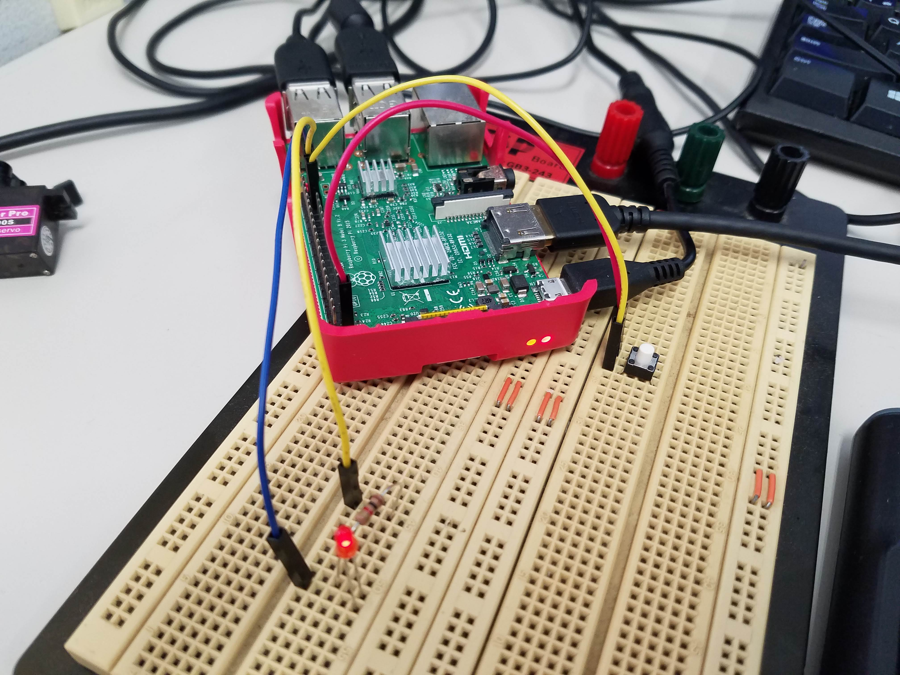

研究ではmove_baseやamclなど自律移動のパッケージの理解や改造で自律移動に関することをしていました。
ですが、ロボコンの時にしていたようにLEDを光らせたり、モータを動かしたくて調べていくうちにラズパイ×pigpio×ROSでできることが分かり、ブログでその過程をまとめていました。
ラズパイ×pigpio×ROSという組み込みライクなニッチな使い方でしたが、ネットで探しても詳しい記事がなかったので、書いているときはオンリーワンの記事が書けていることがとても楽しかったです。
ラズパイ×pigpio×ROS
raspberry piのROS上でpigpioを使ってLチカしてみる
raspberry piのROS上でpigpioを使ってGPIOからサーボを動かしてみる
Raspberry PiのROSからpigpioを使ったSPI通信でMPU9250を動かす
Raspberry PiのROSからpigpioを使ったSPI通信でMPU9250を動かして，Madgwick Filterから姿勢を計算する
Github
また、この過程で個人事業主の方がブログでパーツを紹介してほしいの依頼があり、とてもいい経験でした。
Groovy-PID
Raspberry PiのROSからpigpioを使ってGroovy-PIDを動かしてLチカしてみる
Raspberry PiのROSからpigpioを使ってGroovy-PIDを動かしてモータを動かす